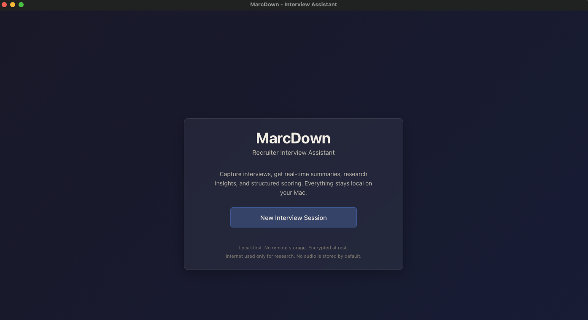
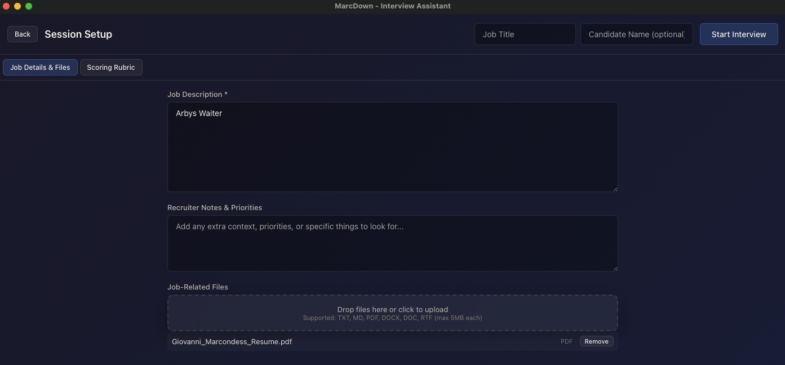
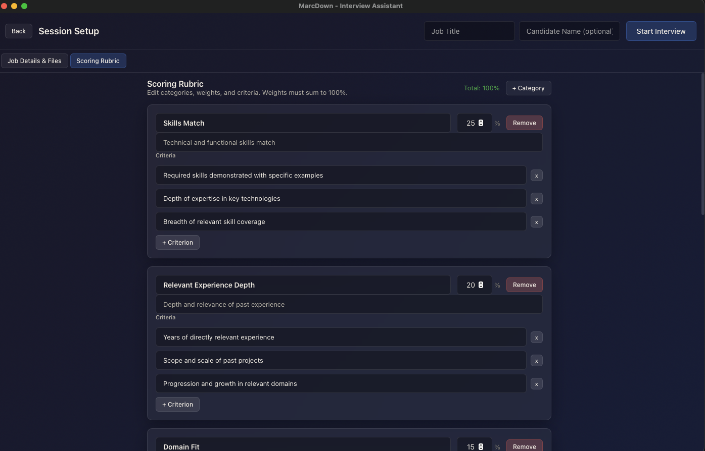
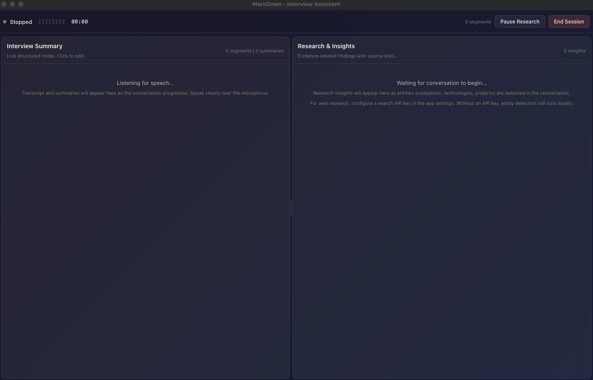
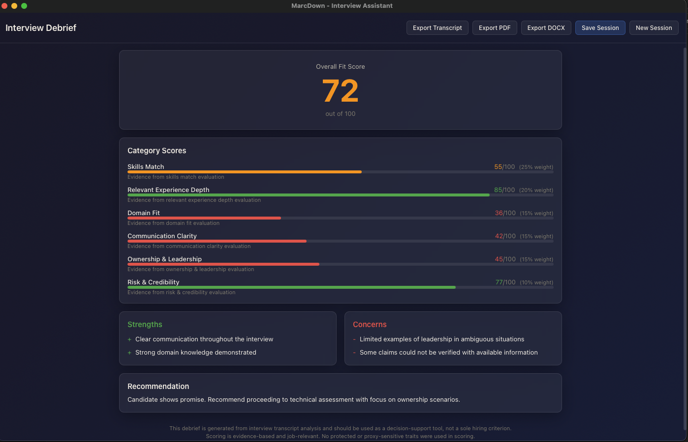
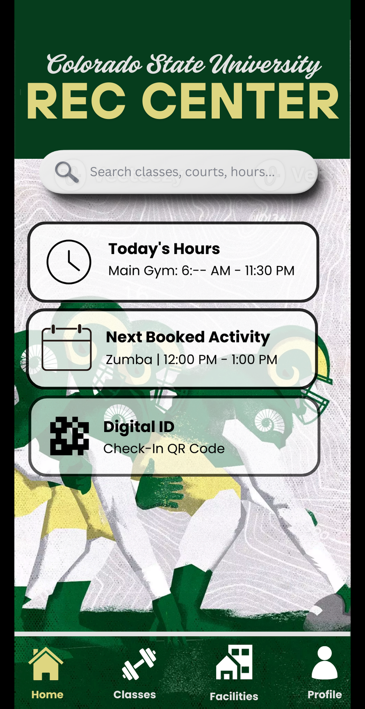
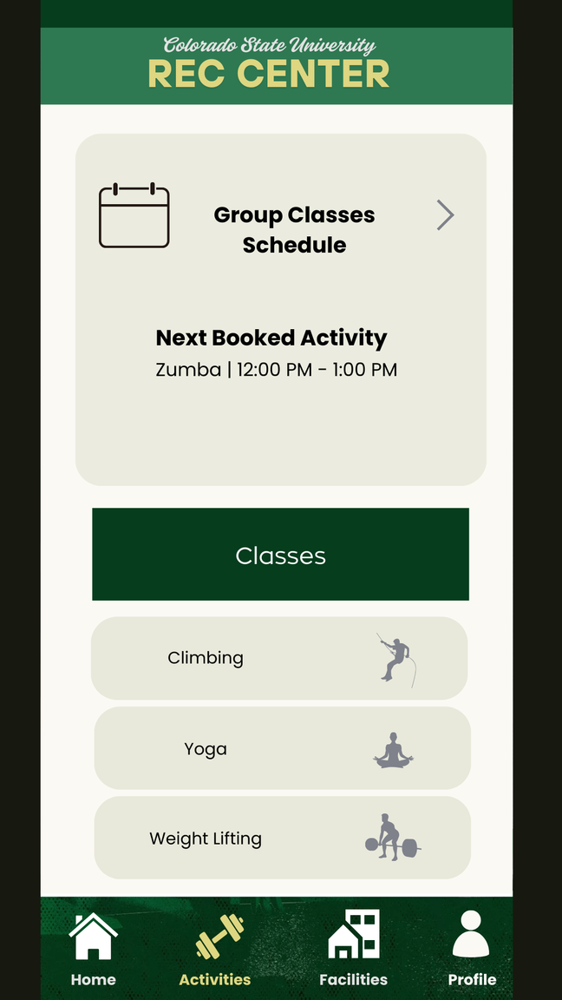
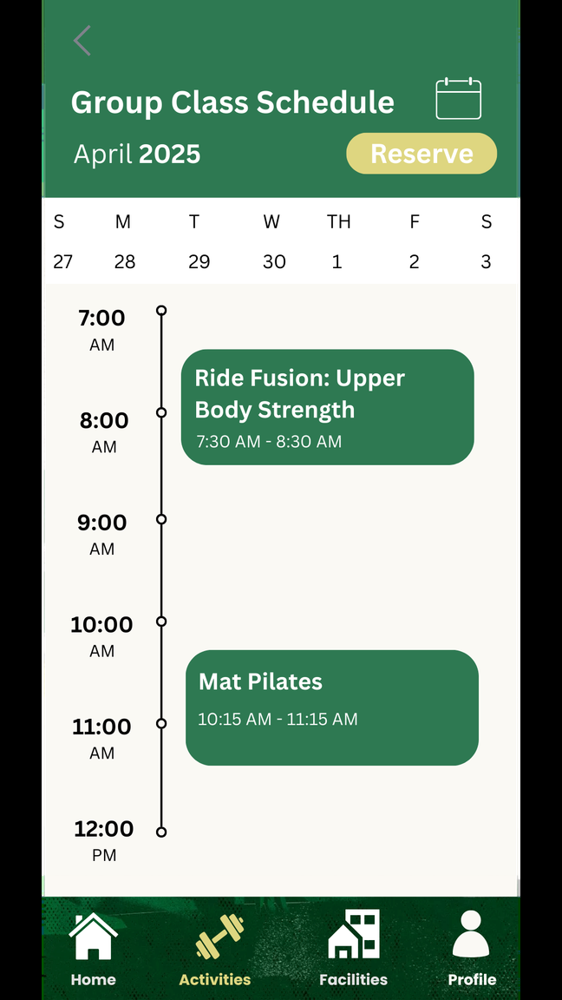
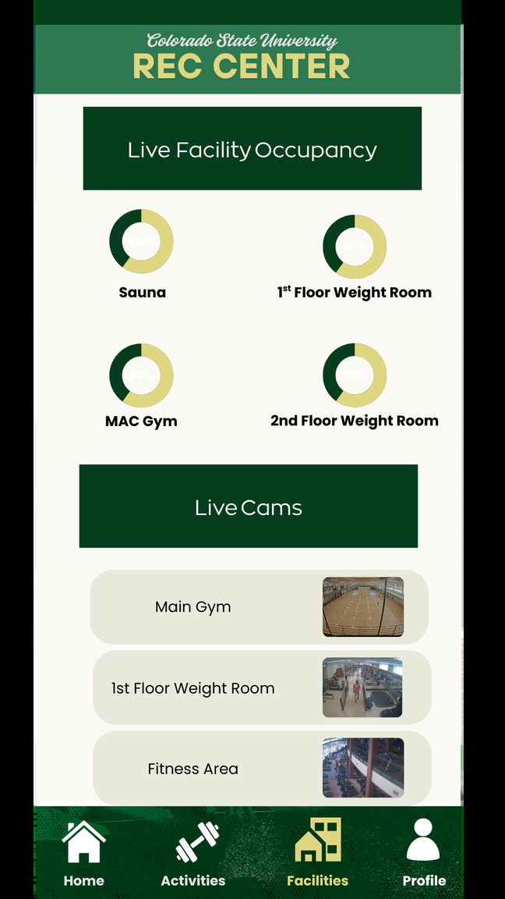

I graduated from Colorado State with a degree in Computer Information Systems and Business. I like building things where data, design, and code overlap. These are some projects from my time there.
I built an interactive dashboard analyzing Costco's financial performance from FY2019 through FY2025. The central question: 81 million loyal members, but only 7% of revenue comes from e-commerce. I pulled apart the DuPont analysis, peer comparisons, and segment data to figure out where that gap is.
Covers DuPont decomposition, revenue and operating margin trends, e-commerce growth curves, competitive benchmarking against Sam's Club and Walmart, and a phased strategic recommendation.
I built a desktop app that sits alongside a recruiter during live interviews. It transcribes in real time, researches the candidate's claims on the fly, and generates a scored debrief when the session ends. Everything runs locally on macOS.
Captures mic and system audio into a single mixed transcript, updated in real time as the conversation happens.
Looks up companies and claims mentioned during the interview. Everything is labeled by evidence type: transcript fact, inference, or external research.
Weighted rubric with subscores for skills match, experience depth, communication clarity. Final score out of 100 with PDF/DOCX export.
No raw audio saved. Nothing leaves the machine unless the recruiter explicitly exports. API keys stored in macOS Keychain.





Managing an AI agent turned out to be way harder than just writing a good prompt. You're not getting a single answer anymore, you're working with it constantly, redirecting, stress-testing, finding new problems every time you think you're done.
Group project where six of us surveyed actual Rec Center employees and redesigned the whole app. We found that 70% of staff dealt with sign-in complaints and 60% reported barcode display problems, so we built the redesign around fixing those issues first.




I built a Snowflake pipeline to find people whose stress levels significantly outpace their wellness. The system scores individuals on a stress-minus-wellness gap, segments them into priority tiers, and uses Snowflake's AI to generate personalized outreach notes for teletherapy and coaching programs.
The business question: how do you identify and prioritize people with high stress and low wellness who would actually benefit from targeted mental-health outreach? I built a stress-minus-wellness gap metric (rescaled to 1-7), tiered the population by gap severity, then used Snowflake's AI_COMPLETE to generate outreach notes with priority labels. The Streamlit app lets you filter by priority, gap range, exercise habits, and job satisfaction to drill into specific segments.